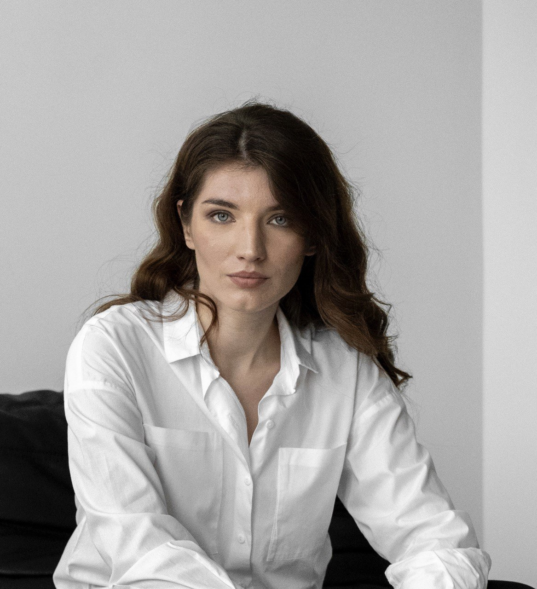

Project Manager
Manager with more than 5 (five) years of experience
Certified SCRUM Master (PSM I) and PMP
Delivered several projects of different complexity using such methodologies as SCRUM and Kanban
Strong expertise in the Legal domain (more than 5 (five) years of experience in the law field)
Coordinated internal resources and managing teams of up to 15 people
Work experience
Project manager, EPAM systems (Dec 2021 - Present)
Ensuring the project team strictly follows the provided timelines and delivers all required items on the schedule
Maintaining comprehensive documentation throughout the entire project duration
Communicating project plans, actions, risks, and issues effectively with key stakeholders
Resolving any issues or challenges that may arise during the project, ensuring smooth progress.
Collaborating with relevant stakeholders to ensure budgetary compliance
Providing regular updates and reports on budget utilization and forecasting.
Education and Qualifications
Certificates
2021 - Scrum.org: Professional Scrum Master (PSM I)
2023 - Project Management Professional (PMP)
Official Education
Master's Degree in Law, Ivan Franko National University of Lviv
Languages
English - C1
Ukrainian - Native
Contact information
Please contant me via the following options:
Email - hnativyuliia@gmail.com
Phone number - 063 991 69 97
LinkedIn
Please check Ukrainian version if needed via
the link